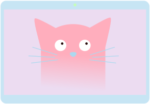

I skype my cat
Caravanserail
Last Sunday afternoon I found myself stumbling along Brick Lane amongst the overwhelming crowds looking for somewhere quiet to rest and maybe charge my phone. I didn't particularly want to be there - I was killing time until my scheduled slot at Silicon Milk Roundabout (perhaps there will be more on this later). I didn't think I was going to have any luck; surely on a Sunday afternoon every single coffee shop in the Shoreditch/Brick Lane area would be packed like a can of hipster sardines.
I've always had a bit of a sixth sense when it comes to nice cafes and restaurants though. Perhaps it was this internal radar that led me unprompted to turn off Brick Lane and down Cheshire Street - I just sort of had a good feeling about the place.